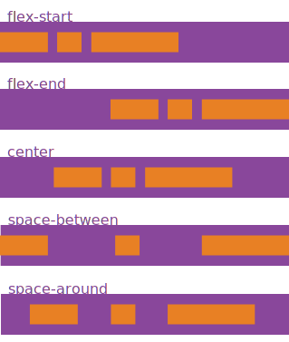
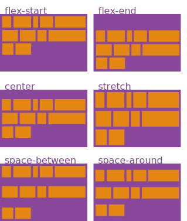
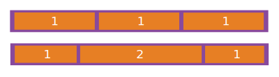

I've got em
Frontend Development Les 3
Vorige week
- CSS bling
- Selectors deel 1
Selectors
Deel 2
Rechts naar links
body > div {
color: green;
}
h1 + p {
margin-top: -1em;
}
h1, p {
font-weight: normal;
}child selectors
p:first-child {
font-size: 1.414em;
}child selectors
p:first-child {
font-size: 1.414em;
}
p:first-of-type {
font-size: 1.414em;
}child selectors
li:nth-of-type(2) {
background: papayawhip;
}
li:nth-of-type(2n) {
background: papayawhip;
}child selectors
li {
background: rebeccapurple;
}
li:nth-of-type(3n + 2) {
background: papayawhip;
}
li:nth-of-type(3n + 3) {
background: olivedrab;
}De laatste drie selecteren
div:nth-last-of-type(-n + 3) {
width: 33.33333%;
}
JavaScript!
querySelector
var nextStep = document.querySelector('fieldset:nth-of-type(2n)');querySelectorAll
var secondSteps = document.querySelectorAll('fieldset:nth-of-type(2n)');classList
var nextStep = document.querySelector('fieldset:nth-of-type(2n)');
nextStep.classList.add('is-visible');classList
var nextStep = document.querySelector('fieldset:nth-of-type(2n)');
nextStep.classList.add('is-visible');classList
nextStep.classList.add('is-visible');
nextStep.classList.remove('is-visible');
nextStep.classList.toggle('is-visible');Flexbox
Properties for the parent

.container {
display: flex;
}Properties for the parent
flex-direction

.container {
flex-direction: row | row-reverse | column | column-reverse;
}Properties for the parent
justify-content

.container {
justify-content: flex-start | flex-end | center | space-between | space-around;
}Properties for the parent
align-items

.container {
align-items: flex-start | flex-end | center | baseline | stretch;
}Properties for the parent
flex-wrap

.container {
flex-wrap: nowrap | wrap | wrap-reverse;
}Properties for the parent
align-content

.container {
align-content: flex-start | flex-end | center | space-between | space-around | stretch;
}Properties for the Children
order

.item {
order: <integer>;
}Properties for the Children
flex-grow

.item {
flex-grow: <number>; /* default 0 */
}Properties for the Children
align-self

.item {
align-self: auto | flex-start | flex-end | center | baseline | stretch;
}Selectors
Universal selector
* {
color: green;
border: 1px solid green;
}Type selector
body {
background: white;
}Descendant selector
body div {
background: white;
}Direct child selector
body > div {
background: white;
}
body div {
background: white;
}Adjacent sibling selector
label + input {
background: none;
}Attribute selector
[for="email"] {
background: slategray;
}
a[href^="https://"] {
background: url(veiligelink.svg);
}
img[src$=".jpg"] + p {
font-style: italic;
}